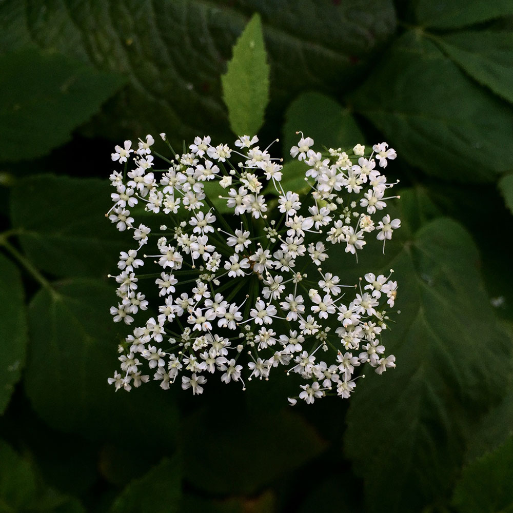

Short info
Daisy is a type of flowering plant that belongs to the family Asteraceae. It is a perennial plant that is known for its white petals surrounding a yellow center, although there are also varieties with pink, red, or other colored petals. Daisies typically bloom in the spring and summer and are commonly found in gardens and meadows. They are also popular as cut flowers and are often used in floral arrangements. Daisies are known to symbolize innocence, purity, and new beginnings, and they are sometimes given as gifts to celebrate the birth of a child or as a symbol of friendship. Additionally, daisies are known to have some medicinal properties and have been used to treat a variety of ailments including coughs, colds, and stomach problems.
Heading 2
Section 1 
Section 2
Section 3